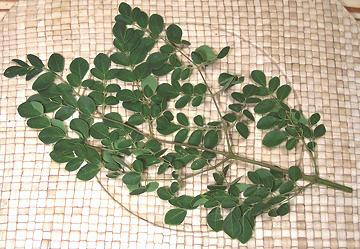

Drumstick Tree
[Horseradish Tree; Malunggay (Philippines); Sajina (India);
Moringa oleifera]
This fast growing tree from northern India has been planted worldwide
because of it's many uses, only a few of which are as food. The name
"Horseradish Tree" comes from the taste of the roots when ground, but they
should not be used as a condiment because they contain serious toxins. The
main food parts are the pods (particularly in India) which may be over 18
inches long, and young leaf shoots (particularly in the Philippines but
also in India). Many parts of this tree also have medicinal properties
(the seeds are supposed to be good for erectile disfunction).
More on Order Brassicales.
Drumstick Pods
"Drumsticks" are very commonly used in Indian cuisine. Immigrants
to the US are often quite surprised when they ask for "drumsticks" in the
markets and are referred to the chicken section. These "drumsticks" are
becoming increasingly available in Indian and Philippine markets here in
California, but are still expensive (2013 US $6.00 / pound) and
availability is still erratic.
Eating the pods can be problematic. In India, very young pods are
often used, when they can be cooked much like green beans. Here in
Southern California we get only the mature, hard as wood pods. With a
fairly mature pod the shell remains very hard and woody even with long
cooking. This is not a problem in India - they eat everything with their
fingers (why soup is almost unknown in India - they don't have spoons).
Here you can treat them as you would Artichoke leaves, Cut into 3 to 4
inch lengths, boil 10 minutes or steam 15, split them open and scrape
out the pulp and seeds by drawing across your teeth, then discard the
woody shell. Taste is pleasant, a bit like green beans and zucchini but
more complex.
Malunggay leaves

[Mienda (Swahili); Odudu oyibo, Okwe oyibo, Okwe olu, Uhe, Oku-ghara-ite
(Igbo); Igi iyanu, Malero, Ewele, Ewé ilé,
Ewe Igbálé, Idagbo monoyé (Yoruba); Zogale (Hausa);
Moringa oleifera]
Malunggay leaves are used in the Philippines in great quantity and are
one of the most nutritious vegetables known, high in calcium, protein,
fiber, phosphorus, iron, beta-carotene, thiamin, riboflavin, niacin,
vitamin C and antioxidants. Many Filipinos hold strong childhood memories
of malunggay leaves in soups - some with delight and some with horror.
These leaves are also used in West Africa, particularly Nigeria.
Buying and Storing:
Fresh leaves can occasionally be
found in well stocked markets serving Philippine communities (in
California surrounding any large medical center - without Filipino
immigrants we would have no health system at all). They can be kept
loosely bagged in the refrigerator for a few days at most.
Frozen:
Flat bags of frozen leaves can always be found
in the freezer cases of Philippine markets, deceptively labeled
"Horseradish Leaves". Jars of brined leaves can be found in some other
Asian markets. Dried powdered leaves are used in parts of India but I
haven't noticed them in the Indian markets here. An 8 ounce package is
mostly water and will yield about 2-1/4 ounces of leaves after thawing
and wringing out, but that's about the right amount for a fairly
large pot of soup.
Cooking:
Fresh or frozen, malunggay leaves should be
added to soups in the very last moments before serving or they tend to get
slimy.
br_moringz 090109 - www.clovegarden.com
©Andrew Grygus - agryg@clovegarden.com - Photos
on this page not otherwise credited © cg1
- Linking to and non-commercial use of this page permitted